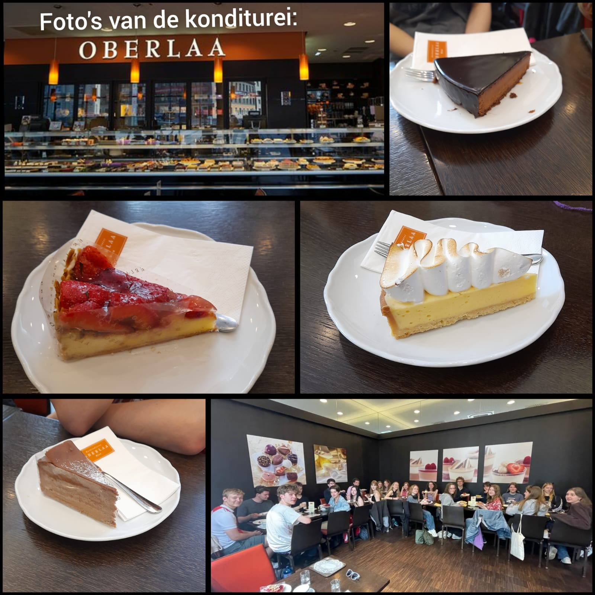

de verschillende steden
1e dag: Aken
Op de eerste dag verzamelde we 0m 8:45 op het centraal station waar we even wachten omdat een leidster de kaartjes was vergeten. Toen al dit opgelost was zijn we met de trein naar Aken gegaan. Toen we uit de trein kwamen gingen we naar het oude huis waar Anne Frank op de weg naar Nederland geschuild heeft. Toen we bij het huis aankwamen legden we rozen neer uit respect voor Anne Frank. (zie hieronder de rozen) Hierna gingen we lunchen. Toen gingen we naar het stadhuis, maar het was gesloten vanwege een soortvan vergadering daarna naar de dom van Aken. Hierna hadden we vrije tijd waarin we gingen werken aan het project en gingen lekker wandelen en shoppen. Later verzamelde we weer bij de dom van Aken en gingen we eten bij een libanees restaurant. Het eten was heel lekker alhoewel de mensen van het restaurant het wel vreemd vonden toen ik en een paar andere mensen het eten zonder saus vroegen. Rond 21:00 gingen we terug naar het station waar we onze spullen ophaalden en stapten de nachtrein naar Wenen in.

hierboven zie je twee foto's van de dom van Aken van binnen en buiten

Hierboven is een foto van het stadhuis van Aken
2e dag: Wenen
Op de tweede dag gingen werden we wakker in Wenen. We pakten onze spullen in en tapten uit de trein. Van het station gingen we naar de dichtsbijzijnde supermarkt en gingen we lekker even in een parkje ontbijten. Toen we lekker gegeten hadden gingen we naar een museum over kunst van Gustav Klimt, Vincent van Gogh en nog een paar kunstenaars die anders kunst maakten dan andere kunstenaars van hun tijd. Toen we klaar waren bij het museum gingen we naar de st. Stephens kathedraal. De kathedraal is heel mooi van binnen en van buiten. Toen we daar klaar waren kregen we vrije tijd waarin ik en een paar vrienden gingen werken aan het project en gingen we nog even zitten in het park waar we hadden ontbeten. Toen gingen we weer afspreken en gingen we naar een pizzaria waar we heel lekker pizza hebben gegeten. Toen we de pizza lekker op hadden gingen we naar het station en stapten we in de trein naar Bratislava waar we meteen naar het hostel gingen.

In Wenen zijn leuke stoplichten en ik dacht dat ik het even laat zien, du hierboven kun je zo'n stoplicht zien.
3e dag: Bratislava
Op de derde dag werden we wakker in het hostel en gingen we ontbijten en daarna gingen we naar een kaseel in Bratislava dat je hieronde kan zien. Hierna gingen we naar een herdenkingsmonument van russische soldaten die hebben gevochten en overleden voor de vrijheid van Bratislava. Hierna kregen we vrije tijd maar we mochten kiezen om mee te gaan naar een markt dus liepen we van het monument naar een markt waar we even gelopen hadden, een gebakje gegeten en kofola (een bratislavisch soortvan cola dat een beetje naar anijs met cola smaakt) gedronken. Na de markt ging mijn groepje even lunch halen en het in een parkje opeten. We gingen toen lekker shoppen en aan het project werken. Om 18:00 moesten we bij elkaar komen om bij een restaurant bartislava (op het internet staat het als Bratislava Flagship) Het was heel erg lekker en echt een aanrader. Ik had zelf snitzel genomen en de andere gerechten zagen er ook heel erg lekker uit. Na het eten gingen we nog een ijse als toetje nemen. Toen we lekker ijs gegeten hadden kregen we nog vrije tijd, ik en mijn groepje zijn weer terug naar het kasteel gegaan voor leuke foto's in de nacht want het was heel mooi en even chillen. We moesten terug bij het hostel zijn om 21:00, we waren net optijd. Bij het hostel gingen we even bellen met vrienden en daarna naar bed.


4e dag: Weer in Wenen
Op de vierde dag gingen we van bratislava naar Wenen. We gingen met de boot over het donaukanaal want de leiding vond het leuk om met de boot te gaan en een keer niet met de trein te gaan. De bootreis was heel mooi en ik had een hele boel lol met vrienden. We stapten uit de boot en gingen naar een café oberlaa waar we heel lekker gebak hebben gegeten (zie collage hieronder). Na het gebak kregen we 20 euro voor lunch, avondeten en ontbijt voor de volgende morgen dus we gingen in een parkje rusten en eten voor rond de 4 euro. Het was wel even heel erg stressen want iemand uit mijn groep verloor diens portemonee, we keken overal en dachten dat de portomonnee gestolen was. Uiteindelijk bleek het bij de servicebalie van de boot, want diens portemonee was uit diens zak gevallen toen diegene iets op de boot kocht. Nadat we de protemonee gevonden hadden gingen we even ontbijt voor de volgende morgen morgen kopen voor ook ongeveer 4 euro per persoon. Na dit alles gingen we naar een soortvan kraam waar ze pizza verkopen en kochten we een grote piza voor ongeveer 45 euro, dus ongeveer 13 euro per persoon. Hierna gingen we weer terug naar het station om in de nachttrein te stappen. Om naar Brussel te gaan.

5e dag: Brussel en terug naar huis
Op de vijfde dag werden we wakker in Brussel waar we in de trein ons ontbijt aten en uit de trein stapten. We gingen van het station door de regen naar het checolade museum waar we een uur voor de reservering aankwamen waardoor we een uur vrije tijd kregen. Tijdens deze vrije tijd zijn we gaan shoppen naar brusselse chocolade en souveniers. Toen gingen we naar het chocolade museum, daar was het niet al te interessant maar wel verukkelijk. Hier in het chokolademuseum heb ik ook nog even bonbons en andere chocolade gekocht voor moederdag. Hierna keken we naar manneke pis, toen naar een interessant plein waar ik en de groep iemand even kwijt raakten omdat diegene aan het kijken was naar een tekenaar. Toen diegene weer gevonden was gingen we naar janneke pis en daarna naar een frietzaak om belgische friet te eten. Na het eten kregen we een half uurtje vrije tijd om ook nog snel naar het station te gaan dus gingen we nog snel even werken aan het project terwijl we naar het station gingen. Waar we de trein naar centraal station namen. We kwamen in de trein een andere werkweekgroep van gent tegen. Vanaf het centraal station ben ik naar station Diemen gegaan. Het was een hele leuke werkweek, maar ik was wel heel blij om weer thuis te zijn.